ЛАБОРАТОРНАЯ РАБОТА 9
9.1. ВЫЧИСЛЕНИЕ НАИБОЛЬШЕГО И НАИМЕНЬШЕГО СОБСТВЕННЫХ ЗНАЧЕНИЙ МАТРИЦЫ
Требуется вычислить границы спектра матрицы A. Пусть матрица A имеет полную систему собственных векторов ei, i=1,..,n:
A ei = λi ei, (1)
- причем
│ λ1 │ > │ λ2 │ ≥ │ λ3 │ ≥ … > │ λ n │.
Решение поставленной задачи можно получить, используя итерационный метод вычисления наибольшего по модулю собственного значения матрицы.
Для вычисления наибольшего по модулю собственного значения матрицы λmax=│λ1│ в случае, когда собственные значения матрицы - вещественные числа, применяется следующий итерационный процесс: строится последовательность чисел
(2)
- здесь вектор x(k+1) вычисляется следующим образом:
x(k+1) = A x(k), (3)
- x(0) - произвольный начальный вектор.
Процесс построения последовательности (2) продолжается до выполнения условия
│ λ(k)― λ(k-1)│ < ε, (4)
- где ε - заданная точность. При этом значение λk и является приближенным значением искомого λmax, а соответствующий вектор x(k)– приближенным собственным вектором, соответствующим λmax.
Для вычисления границ спектра матрицы A вышеизложенный метод нужно применить к матрице A+cE, собственные значения которой связаны со спектром матрицы A соотношением
λi(A+cE)=λi(A) + c. (5)
Очевидно, что при достаточно больших положительных значениях c наибольшему по модулю λi(A+cE) соответствует наибольшее λi(A), а при достаточно больших отрицательных c наибольшему по модулю λi(A+cE) соответствует наименьшее λi(A).
Замечание1. При численной реализации алгоритма для предупреждения переполнения или обнуления элементов векторов x(k) необходимо их нормировать, т.е. вместо соотношения ( 3 ) использовать:
y(k +1) = A y(k),
- где y(k) = x(k) / ║ x(k) ║. (Используйте среднеквадратичную норму.)
Замечание2. В качестве константы c можно, например, использовать ║A║, так как известно, что │λi│ не больше ║A║.
Задание: Построить итерационный процесс, определяющий наибольшее и наименьшее собственное значение матрицы, у которой существует наибольшее по модулю собственное значение кратности 1 с заданной точностью. Найти нормированные собственные векторы этих собственных чисел. Протестировать на примере матрицы второго порядка с известными собственными значениями.
Посмотреть пример выполнения задания в Microsoft Excel.
9.2. МЕТОД ВРАЩЕНИЙ ОПРЕДЕЛЁННЫХ СОБСТВЕННЫХ ЗНАЧЕНИЙ СИММЕТРИЧНОЙ МАТРИЦЫ
1. Матрицы А и B называются подобными, если существует такая неособая матрица F, что A=F*B*F-1. Собственные числа А и B – совпадают.
2. Матрица U называется ортогональной, если U*UT = E, или UT = U-1.
3. Всякая симметричная матрица А, (А=AT) может быть записана в виде А = UT*L*U, где U – ортогональная матрица, а
L – diag{ λi(A)}.
Но тогда из этих определений следует, что для любой симметричной А верно:
U*A*UT = U*UT*L*UT*U = U*U-1L*U-1*U = L.
Значит, по определению A и L – подобные.
Обозначим собственные числа матрицы А – λi(A). Тогда проблема определения λi(A) сводится к определению ортогональной матрицы U.
Построим такие матрицы Wn, чтобы для них выполнялось при n -> ∞ : Wn*A*WnT -> L.
Такие Wn будем искать в виде следующего произведения:
Wn = Vn*Vn-1*…*V1,
где все Vi – ортогональные матрицы.
Рассмотрим следующую матрицу 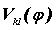, у которой:
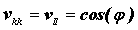; 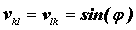, 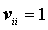 , при 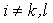, все остальные 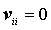.
Такая матрица при n = 4, k = 2, l = 3 имеет следующий вид:
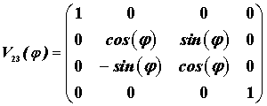
Можно показать, что эта матрица является ортогональной. Известно также, что она осуществляет вращение вокруг оси X на угол . Поэтому она называется матрицей вращения.
Имеет место следующее утверждение:
Пусть B – некая симметричная матрица размерности [m×m], B=BT и рассмотрим 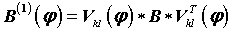.
Существует следующее утверждение для этой матрицы:
Если k и l – это индексы 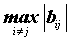, а 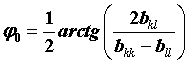, то тогда для элементов матрицы 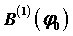 верно следующее равенство:
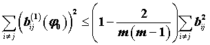 (*)
Именно такие матрицы можно использовать при формировании матрицы Wn.
Действительно, построим последовательность матриц A(n) по следующему закону:
A(1) = V1*A*VT1;
A(2) = V2*A(1)*VT2;
……………………;
A(n) = Vn*A(n-1)*VTn.
Причём, для каждого 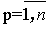. Vp выбирается = 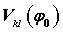, так, чтобы 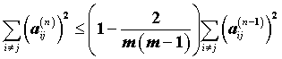.
Но тогда A(n) = Vn…V1*A*VT1 …VTn, или A(n) = Wn*A*Wn T и при этом 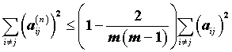
По определению, A(n) и A -подобные матрицы, следовательно их собственные значения – равны.
Если теперь рассмотреть матрицу 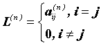, то A(n) и L(n) – близки в силу неравенства (*). Следовательно, близки их коэффициенты характеристического многочлена, а тогда и собственные числа.
Поэтому собственные значения L(n) = диагональным элементам A(k), и являются решением задачи определения всех λi(A) с задаваемой заранее точностью.
Замечание 1. При практической реализации метода строить A(p), выбирая 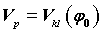, на основе сформированного утверждения.
Замечание 2. Если А – симметричная комплекснозначная матрица, то АT -> A* - сопряжённая матрица.
Алгоритм выполнения Л.Р 9.2.
“Определение собственных чисел симметричной матрицы методом вращений”
1) Пусть дана матрица А размерностью [n×n], A=АT, n=1;
2) Определяем k и l, такие, что 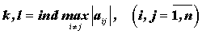;
3) Находим 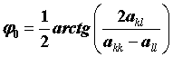;
4) Строим матрицу 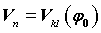 – матрица вращения с элементами
; , , при , все остальные .
5) Находим A(n) = Wn*A*Wn T
6) Проверяем  : если оно верно, то конец алгоритма, иначе – n=n+1 и возврат к пункту 2.
: если оно верно, то конец алгоритма, иначе – n=n+1 и возврат к пункту 2.
Задание: Используя выше указанный алгоритм, найти собственные числа симметричной матрицы. В качестве тестового задания выбрать матрицу 3его порядка с известными собственными числами. При выводе результатов должно отслеживаться как выбираются индексы k и l для матриц вращения.